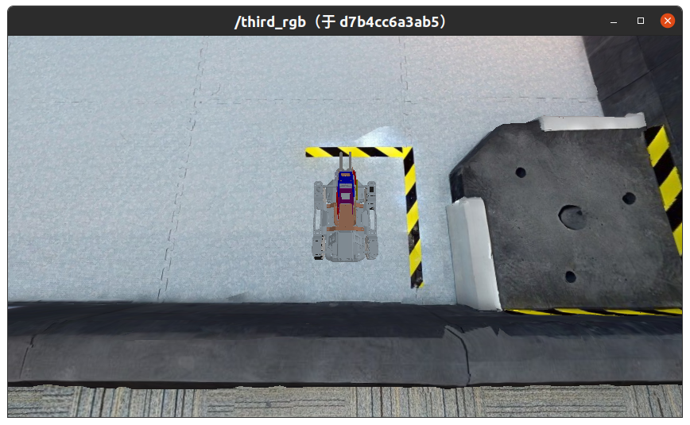

作业3 - 基于 Cartographer 的小车定位
在本次作业中，请将 launch.sh 中的 ID=test 改为 ID=[Student ID] ，其中 [Student ID] 为自己的学号。
1. 这次作业的目标是什么？
本次作业的任务是 EP 小车在环境中的定位，通过 Cartographer 工具实现。
Cartographer 是一个进行实时定位与重建（SLAM）的算法，在本次作业中我们只需用到其中的定位部分。
2. 我要怎样完成这次作业？
2.1 克隆作业仓库
将作业仓库克隆至本地：
git clone https://gitee.com/tb5zhh/is2022-fall-hw3.git
或
git clone https://github.com/AIR-DISCOVER/IS2022Fall-hw3.git
2.2 修改参数
修改 cartographer_navigation/param/cartographer_2d_localization.lua 中的参数配置。
3. 如何检验我的实现是否正确？
3.1 准备环境
在 IS2022Fall-hw3 目录下，执行以下命令：
（GPU版本）
./launch.sh
（CPU版本）
./launch_cpu.sh
等待命令执行，出现以下界面时，表明已经完成编译控制节点、启动仿真环境、启动可视化、启动控制节点、启动键盘控制：

同时在此界面中，键盘输入可以控制小车移动，具体操作说明如这里所示。
此外，进行到上述状态后会出现两个可视化界面。第一个可视化界面是小车的第三人称视角相机输出：

第二个可视化界面是 cartographer 的可视化界面：

3.2 录制路径并比较结果
在 IS2022Fall-hw3 目录下，执行以下命令：
./record.sh
执行此命令后，小车移动的轨迹将被记录30秒，这一段时间内可以在上一节的键盘监听窗口中控制小车移动。记录完成后将会调用工具对定位过程的准确性进行评价，并以量化误差和可视化的方式输出。
你需要修改 cartographer_navigation/param/cartographer_2d_localization.lua 中的参数配置，使得量化误差尽可能地小。我们已经在工程中提供了这个文件，但是你需要通过修改这个文件进一步提高定位性能、降低量化误差。
量化误差的样例如下：

轨迹的可视化比较的样例如下：

3.3 停止运行中的容器
./halt.sh
4. 如何提交我的作业？
如果你确认你的实现正确，你可以通过以下命令将你的控制容器镜像推送到课程Docker平台。
docker login docker.discover-lab.com:55555
docker push docker.discover-lab.com:55555/[Student ID]/client:hw3
注意，在本次作业中，你至少需要运行过一次 ./launch.sh （即至少编译过一次控制容器），才能完成作业的提交。
我们的评测系统会自动运行你的容器并打分。